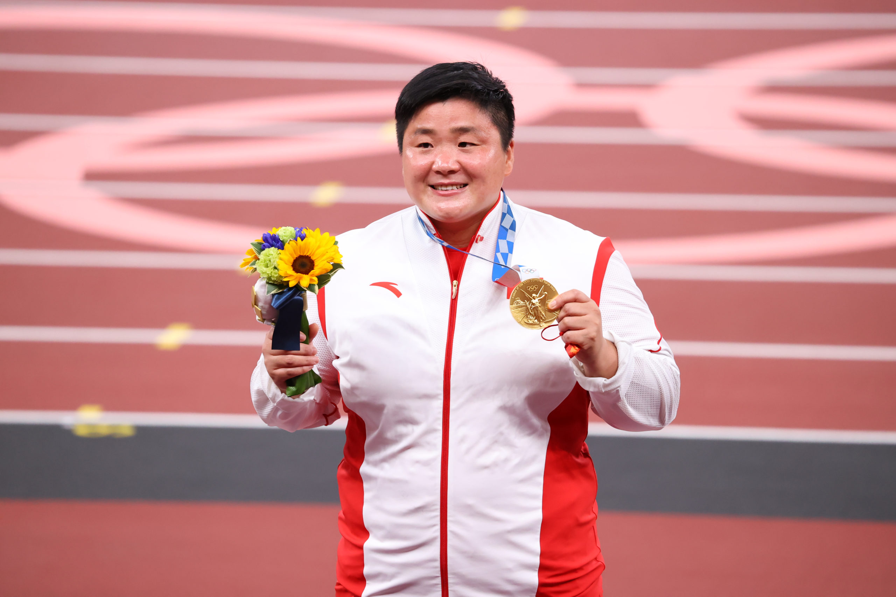
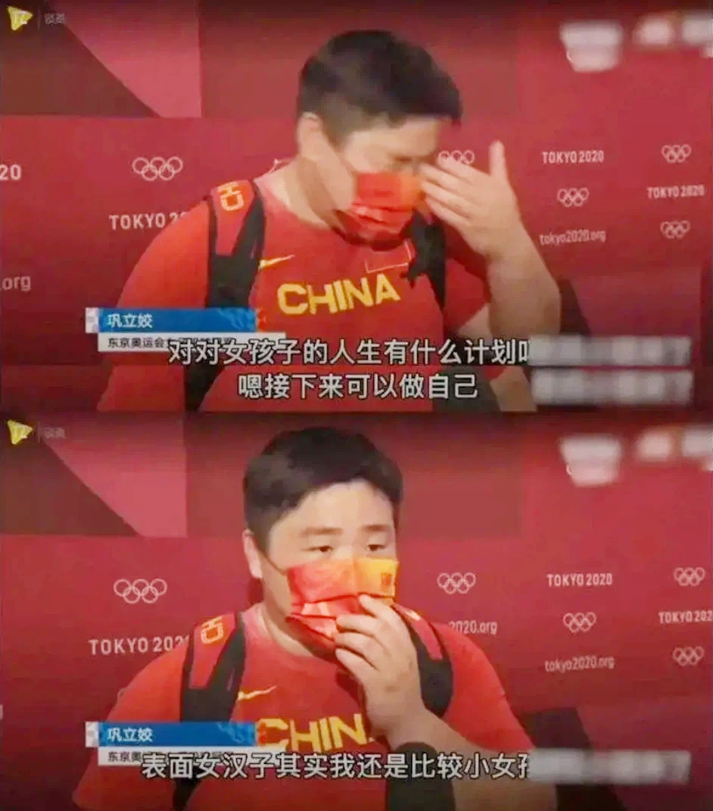
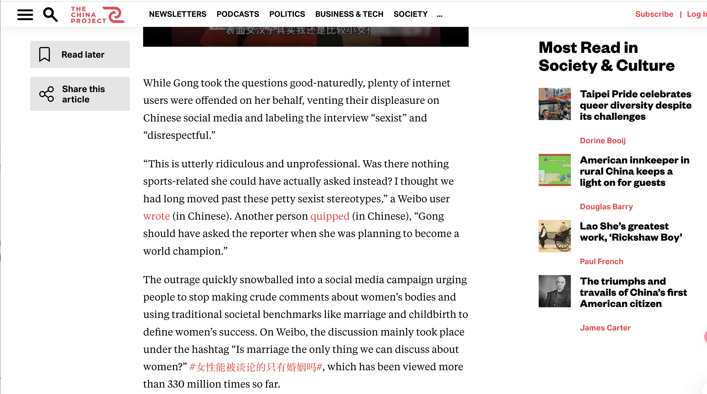

After Gold, Still Asked to Be a Woman
On August 1, 2021, Gong Lijiao won China's first Olympic gold in a field event. CCTV wanted to know when she would lose weight.

20.58 meters: a personal best, China's first Olympic gold in a field event, and the moment before the broadcast changed the subject.
The Throw
Gong Lijiao threw 20.58 meters in the Tokyo Olympic women's shot put final. That should have been enough to hold the room for a while. It was China's first Olympic gold in any field event, and it came after years of Gong coming close, staying in the event, and returning again. It was Gong's fourth Olympic Games. She had taken bronze in Beijing 2008, silver in London 2012, and finished fourth in Rio 2016 before finally reaching the top of the podium in Tokyo. By then, she also held two World Athletics Championship titles. Shot put is easy to misunderstand because it looks like one explosion of strength. A great throw is not strength alone. It is timing, balance, footwork, release angle, body memory, and a calm kind of violence. The ball leaves the hand in one second, but that second is full of work.
Then, in CCTV's post-gold interview, the story changed. Instead of staying with the throw, the reporter asked when Gong would lose weight.
I have watched that interview many times now, and the part that does not get easier is how friendly it sounds. She is not yelling. She is not trying to sound cruel. The reporter is being chatty — asking the kinds of questions a relative asks at dinner: when are you going to lose some weight, do you have a boyfriend yet, when will you finally settle down. The questions belong to a script that runs at every Chinese family gathering I can remember — the aunt who comments on your weight before saying hello, the uncle who asks if you are seeing anyone, everyone leaning in, everyone thinking they are just showing concern. CCTV did not write that script. It just turned the camera on while it ran.
The problem is not only that the questions were sexist. They were. But stopping there makes the scene too simple. The stronger question is: what did the interview do to the win?
> do to the win?
The Substitution
What CCTV did after the throw was not just sexism. It was substitution. The interview moved the victory away from force, technique, and history, and toward weight, marriage, and womanhood — exposing a habit in which women in masculine-coded sports are celebrated only after their femininity has been put back on trial.
This is the question Pressure Line was built to ask. The company's guidebook named three ways broadcast language fails athletes: by omission, by reduction, and by substitution. The Gong interview is substitution at its most exposed.
The difference becomes clearer when the CCTV interview is placed beside the sports report from the same event. World Athletics covered Gong's win through the distance, the personal best, and the historical first. CCTV's interview moved almost immediately toward the body: "manly woman," weight, marriage, and the question of whether Gong would return to herself. Same medal, same athlete, same Olympic moment — and two completely different reports about what mattered.
The interesting question is not which one is correct. World Athletics is the federation; of course it stays with the sport. The harder question is why the home country's national broadcaster could not.
A post-victory interview is not just harmless follow-up. It tells the audience what to notice after the athletic act is finished. It can keep the audience inside the sport by asking about technique, pressure, rhythm, injury, training, or the years behind the result. It can also move the audience somewhere else entirely. In Gong's case, CCTV moved very quickly.
The interview did not erase the medal. The medal was still there. But it changed what the medal was allowed to mean. Instead of staying with the throw, the questions moved toward whether the woman who made it still fit a familiar idea of womanhood. Gong had made history with her body, and then that same body was treated as something that needed explanation.

The interview did not erase the medal. It moved the question away from it.
The Reading
The Chinese phrase matters here. The reporter asks about Gong "做回自己." English coverage often translates this as "return to being a woman," but the Chinese is even sharper. "做回自己" means something like "return to being yourself." The small word "回" carries the problem. To return means there is a place you left. It suggests that the athletic Gong, the Gong who trained her body into Olympic power, is somehow not the full or proper Gong. In that grammar, the strong Gong is the detour. The softer, thinner, more marriageable Gong is the home she is supposed to come back to.
That is why the question feels so heavy even though it sounds casual. The reporter is not only asking about Gong's future. She is quietly deciding which version of Gong counts as her real self.
The arm-wrestling question does something similar. On the surface, it sounds playful. The reporter asks whether Gong arm-wrestles men. But the playfulness is not innocent. It takes professional strength and turns it into a small social performance. Instead of asking how she generates force in the throwing circle, the question imagines her strength at a table, against men, as entertainment. The Olympic champion becomes a fun body to test.
Gong's answer is short. She says she is very gentle and does not arm-wrestle. Read it that way and the moment changes. She answers inside the reporter's language, but she also refuses the scene the reporter offers her. She does not say, "Yes, I can beat men," because that would keep her trapped inside the spectacle of abnormal strength. She also does not apologize for being strong. She says she is gentle, and she does not play that game.
Watching this as a Chinese woman, the part that gets me is how recognizable it is. I have heard versions of these questions during holidays and in rooms where adults suddenly become very interested in a woman's weight, dating life, and marriage plan. That is why Gong's smile in the interview does not make the questions better. It makes the scene more familiar. Women are often expected to keep the room comfortable while being made uncomfortable. They have to answer without sounding angry, refuse without looking rude, protect themselves but gently. Gong had already done the athletic work. Then the interview asked for another performance: to become legible as a woman again.
That is the substitution at the center of the profile. CCTV did not literally take away Gong's gold medal. It took away the language that should have surrounded it. A victory built from force, technique, years, and national history was replaced with a test of weight, marriage, softness, and womanhood.
The Pattern
This replacement did not come from nowhere. Shot put already sits on the masculine side of how Chinese sports culture sorts athletic bodies. Xu, Fan, and Brown's 2021 study of sports gender typing in China helps show that sports are not only played by men or women; they are also imagined as masculine or feminine before any athlete enters the field. That matters here because Gong won in a sport already coded as male. Her body was not only the body of a champion. In the interview, it became a body the broadcast felt it had to manage.
CCTV's questions also fit a longer broadcast habit. In their study of CCTV's Olympic coverage of women's gymnastics, Xu, Billings, and Fan found that female athletes were often framed through personality, appearance, and physical traits instead of technical labor. Gong's interview is that habit made painfully clear. The sport disappears from the questions, and the athlete is compressed into body, temperament, and future wifehood.
This was not the only time that script appeared during the Tokyo Olympics. Sixth Tone reported that another Chinese gold medalist, shooter Yang Qian, was asked by a CCTV reporter about her "ideal man." The detail matters because it makes Gong's interview harder to dismiss as one awkward exchange. Different athlete, different sport, same pull toward romance and acceptability.
The cultural context matters because Gong was not being interviewed by a random entertainment channel. She was a Chinese woman winning a historic Olympic gold on state television. National celebration did not protect her from gender policing. The greater the achievement, the more the interview seemed to need to pull her back into a familiar feminine script.
"It's not like Gong can't find a husband. Most men just don't deserve her. Discourse about women isn't limited to marriage and physical appearances. There are also dreams and success."
完全说出了我的心声，谢谢!

The public response named the question CCTV made visible.
The Refusal
The hashtag translates roughly as: "Can women only be talked about through marriage?" According to The China Project, it was viewed more than 330 million times. But the wording matters more than the number. It is not a statement. It is a question thrown back at the interview. CCTV asked Gong to explain her womanhood. The public asked why womanhood, and especially marriage, became the available language for talking about a woman who had just made sports history.
The backlash also fit a broader Olympic conversation about Chinese sportswomen and beauty standards. Sixth Tone reported that Chinese female athletes during the Tokyo Olympics were widely praised for challenging narrow ideas of beauty and femininity. Gong's case belongs to that larger moment, but it is sharper because the gender test happened inside the official post-gold interview itself.
That is the contested part of Gong's public image. CCTV constructed one version of her: the champion whose body still had to be made feminine again. The interview circulated through state media, online discussion, and international coverage. But that image was contested by Gong's own small refusals and by a public reaction that named the problem.
Without that reaction, the interview might have passed as awkward but ordinary. With the reaction, the pattern became harder to ignore.
Some English-language outlets covered the story mainly as a backlash: CCTV was "under fire," the reporter had asked sexist questions, viewers were angry. That frame is useful, but it can also make the story too small. The deeper issue is not only that people were offended. It is why so many people immediately understood what had happened. They recognized the route. They had seen female achievement moved toward body, marriage, softness, and acceptability before.
Gong's own answers matter for the same reason. She did not give a long feminist speech — her refusal was quieter and more uncomfortable than that. She kept answering, but her answers exposed the poverty of the questions. When asked about returning to herself, she did not accept that athletic greatness had made her less of a woman. When asked about marriage, she answered, but she did not let marriage become the meaning of the medal. Her presence kept reminding viewers of what the interview was trying to move away from.
Peng, Wu, and Chen's 2024 analysis of Chinese online discussions about sportswomen documents a similar pattern: even when a female athlete's performance is exceptional, public conversation often moves toward her body, attractiveness, dating life, and acceptability. That research helps explain why the backlash to Gong's interview spread so quickly. The pattern was already familiar. This time, the public named it. The hashtag "女性能被谈论的只有婚姻吗" was not a discovery. It was a refusal.
What This Reveals
For Pressure Line, this is the same structure the company identified in its guidebook, but in a harsher form. In the China Mermaid Open, substitution often happens through beauty. Athletes make difficult choices about movement, breath, timing, risk, and composition, but coverage turns that work into atmosphere: grace, fantasy, spectacle.
In Gong Lijiao's case, the replacement takes a different form. It is not underwater beauty. It is femininity. The thing replaced is force, technique, and history. The replacement is weight, marriage, and womanhood.
AQUATIC SUBSTITUTION
GENDER SUBSTITUTION
Same structure, different mask.
This is why this profile is not about one awkward reporter. If it were only one reporter, the story would be easier. The more uncomfortable truth is that the questions made sense inside a common cultural habit. A woman can win. She can bring glory to the country. She can become an Olympic champion. But if her sport, body, or public image does not fit conventional femininity, she may still be asked to prove she has not gone too far.
Gong Lijiao did not need that interview to make her victory meaningful. The meaning was already in the throw. The camera could see her — it was pointed straight at her. The problem was the script it had been handed: when a woman wins, ask when she will return to being one.
The throw was 20.58 meters.
THE SCRIPT WAS OLDER THAN THAT.
REFERENCES
- Encyclopaedia Britannica. (2024, July 24). Gong Lijiao. In Encyclopaedia Britannica. https://www.britannica.com/biography/Gong-Lijiao
- Feng, J. (2021, August 5). Chinese Olympian wins gold in shot put, faces sexist interview questions from state broadcaster. The China Project. https://thechinaproject.com/2021/08/05/...
- Peng, A. Y., Wu, C., & Chen, M. (2024). Sportswomen under the Chinese male gaze: A feminist critical discourse analysis. Critical Discourse Studies, 21(1), 34–51. https://doi.org/10.1080/17405904.2022.2098150
- World Athletics. (2021, August 1). Dominant Gong wins shot put crown. World Athletics. https://worldathletics.org/news/report/...
- Xu, Q., Billings, A. C., & Fan, M. (2018). When women fail to "hold up more than half the sky": Gendered frames of CCTV's coverage of gymnastics at the 2016 Summer Olympics. Communication & Sport, 6(2), 154–174. https://doi.org/10.1177/2167479517695542
- Xu, Q., Fan, M., & Brown, K. A. (2021). Men's sports or women's sports? Gender norms, sports participation, and media consumption as predictors of sports gender typing in China. Communication & Sport, 9(2), 264–286. https://doi.org/10.1177/2167479519860209
- Zhang, P. (2021, August 5). Tokyo Olympics: CCTV under fire after reporter calls Chinese gold medal winner a "manly girl" and asks her when she'll "return to being a woman." South China Morning Post. https://www.scmp.com/...
- Zhang, W., & Wang, W. (2021, August 6). Female Chinese athletes applauded for "correcting" beauty standards. Sixth Tone. https://www.sixthtone.com/news/1008185